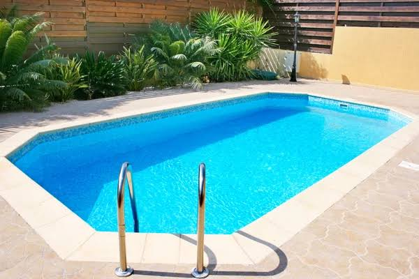
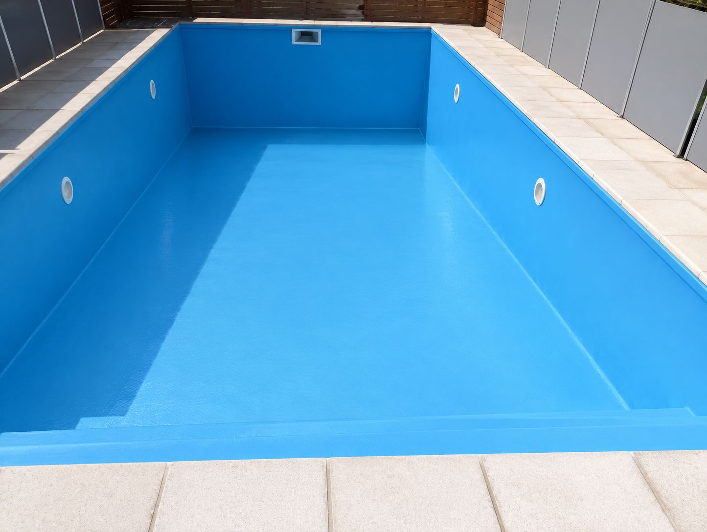
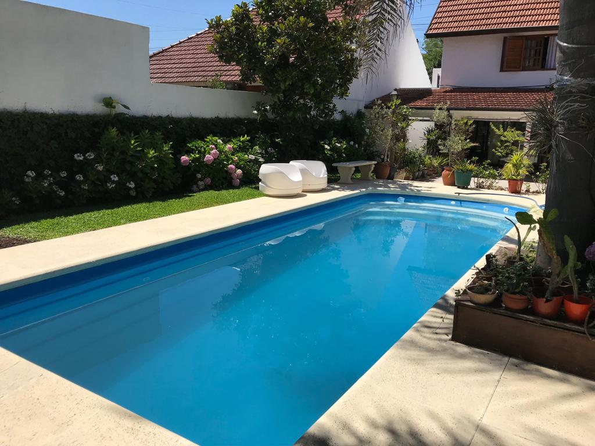
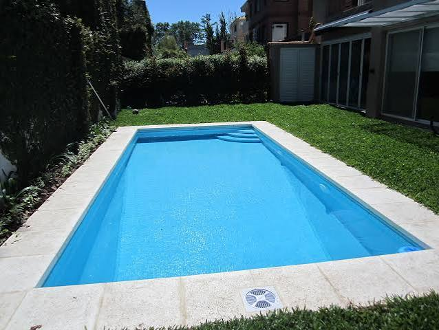

🏊
Mantenimiento integral
Limpieza, control de niveles, aplicación de químicos y revisión de equipos. Nos ocupamos de todo durante todo el año.
Mantenimiento de piletas y gas en garrafa en Villa Icho Cruz
Limpieza, control de niveles, aplicación de químicos y revisión de equipos. Nos ocupamos de todo durante todo el año.
Preparamos tu pileta para la temporada: filtrado, cloro y equilibrio químico completo para que la disfrutes desde el día uno.
¿Agua verde o turbia? Te la revivimos. Diagnóstico y tratamiento para volver a dejarla cristalina sin desperdiciar litros.
Control de pH, cloro y parámetros del agua con tratamiento personalizado y productos de la mejor calidad.
Venta de garrafas cargadas de todas las medidas, con entrega a domicilio y atención personalizada.
Reparamos bombas y filtros, cambiamos la manija de multiválvulas y hacemos cambio de cuarzo para que tu filtro vuelva a rendir.
Venta de filtros, bombas y accesorios marca Vulcano. Te asesoramos para elegir el equipo ideal según tus metros.
También hacemos pintura de piletas: reparación de revoque y pintura especial para que quede como nueva.
Todo lo que necesitás: productos y servicios. Consultanos por precios por WhatsApp.
Lo que más nos consultan
Depende de la estación. En verano y primavera, por el calor y las lluvias, recomendamos limpiar 1 o 2 veces por semana. En invierno y otoño, cada 15 o 21 días es suficiente.
Aspirado con barrefondo, limpieza de superficie, cepillado de piso y paredes, control de cloro y pH, aplicación de productos y revisión de los equipos filtrantes.
En la mayoría de los casos tu pileta se recupera sin vaciarla. Hacemos un diagnóstico, estabilizamos cloro y pH, aplicamos los tratamientos y en poco tiempo la tenés cristalina otra vez.
En general, cada 3 a 5 años según el uso. Si el agua se pone turbia aunque esté bien clorada, el filtro pierde presión o lo lavás seguido a contracorriente, es señal de que la arena ya no filtra bien. Nosotros hacemos el cambio de cuarzo.
Sí. Vendemos garrafas cargadas de 10, 15 y 45 kg, y las llevamos hasta tu puerta. Escribinos por WhatsApp y coordinamos el envío.
Trabajamos en Villa Icho Cruz y alrededores. De todas formas, escribinos y coordinamos la visita.
Mantenimiento, recuperación y pintura de piletas en Villa Icho Cruz.
↔ Deslizá la barra para ver la transformación



